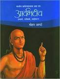

Aryabhatta is known as the father of Indian mathematics and Indian astronomy. His intellectual brilliance remapped the boundaries of Indian Mathematics and Astronomy. In algebra, he gave a series of squares and cubes. i.e.12+22+........+n2=[n{n+1}*{2n+1}]/6, and 13+23+…....+n3=[1+2+…....n]2.In 499 A.D, at the age of 23, he wrote a text on Astronomy and an unparalleled treatise on Mathematics. His contribution to Mathematics, Science, and Astronomy is immense, and yet he has not been accorded the recognition in the world history of Science. In Sanskrit, ‘Arya’ means ‘Goddess Saraswati’ and ‘Bhatta’ means ‘priest’. This means ‘Priest of Goddess Saraswati’. The name itself defines this great soul. He was India’s first major Mathematician-Astronomer from the classical age of Indian Mathematics and Indian Astronomy. He was born in Tarenaga in 476 A.D. to Shri Bandu Bapu Athawale and Shrimati Hansabai Bandu Athawale. It is however definite that he traveled to Patliputra (present-day Patna, India) for studies and even resided there for some time. He became immortal for the invention of zero (0). His discoveries have been written in two books named:-
1.Aryabhattiya
2.Arya-Siddhanta
In Aryabhattiya, he writes that ‘the setting and rising of planets’ is a perception similar to that of someone in a boat going forward sees an unmoving object going backward. Aryabhatta correctly asserted that the planets shine due to the refection of sunlight, and that the eclipses occur due to the shadow of Earth and Moon. He has also explained the :
1.rotation of Earth on its axis
2.the reflection of light by moon
3.sinusoidal functions
4.solution of single-variable quadratic equation
5.value of π correct to 4 decimal places
6.the diameter of Earth
7.calculation of the length of the sidereal year
Using nothing other than Pythagoras theorem, Aryabhata wrote the first-ever trigonometric tables, carefully calculating the values. Using this great knowledge, later Indiana astronomers were able to estimate the relative distances of the sun and other planets, right from the earth itself."The universal medicine for the soul is the supreme reason and absolute justice for the mind mathematical and practical truth for the body of quintessence a combination of light and gold." - Aryabhatta